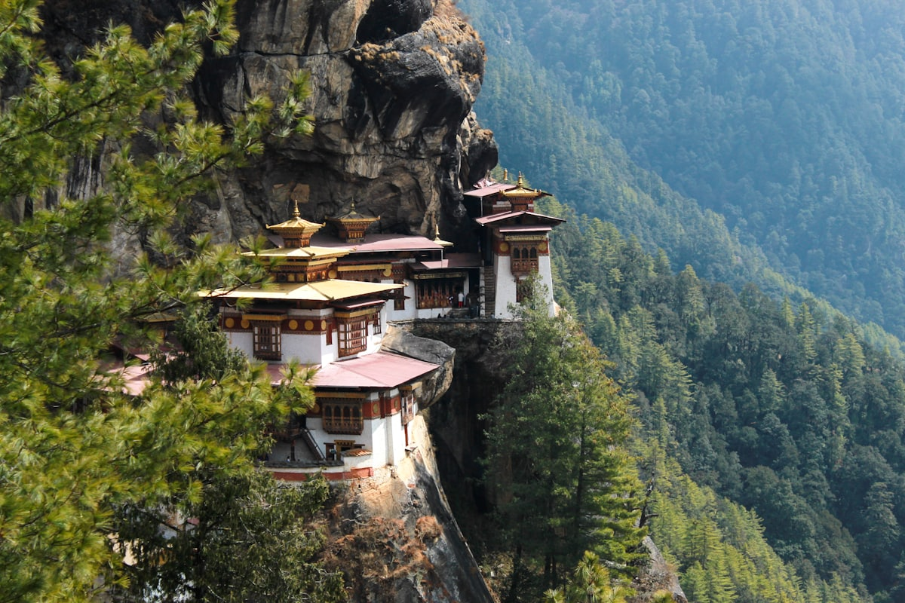
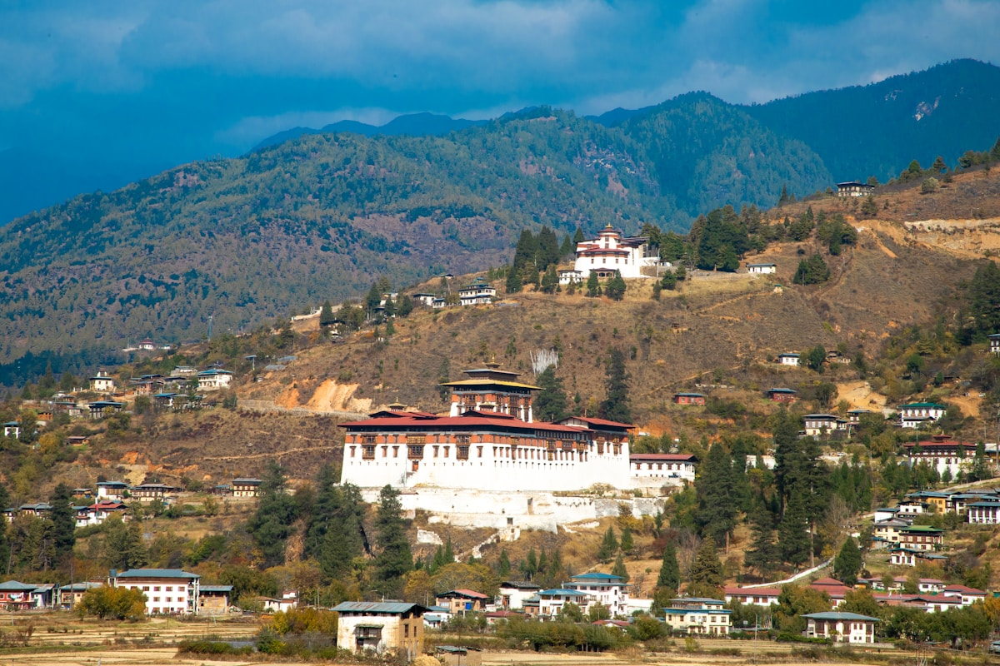
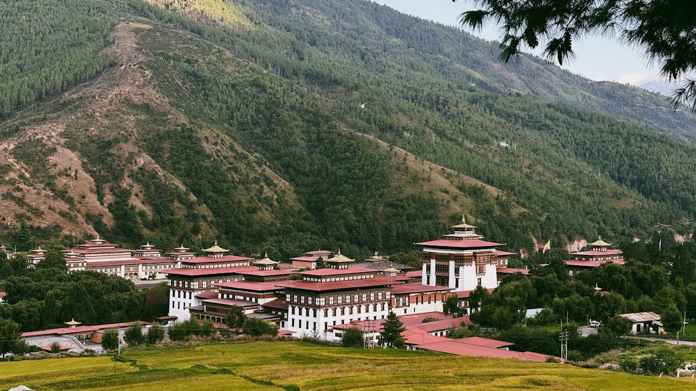
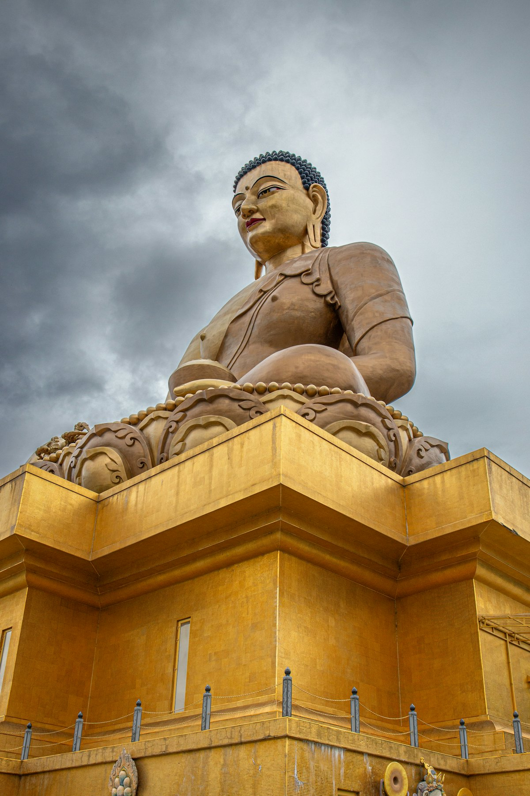
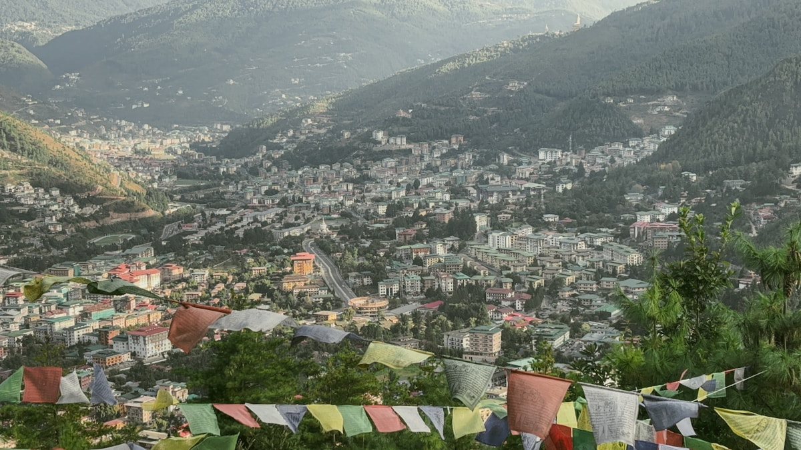
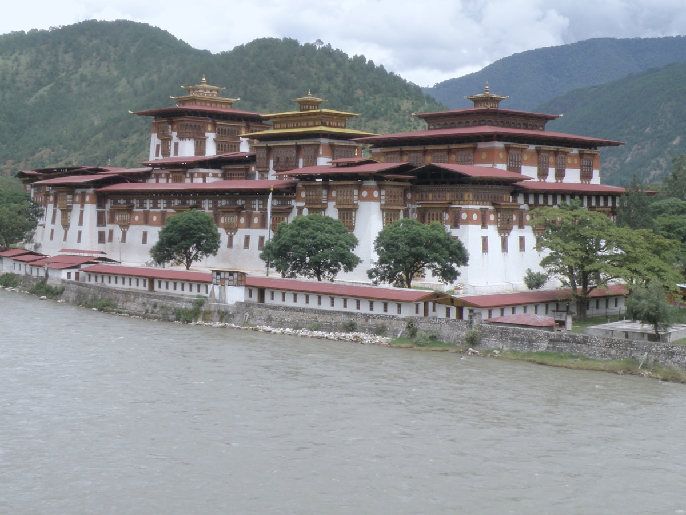
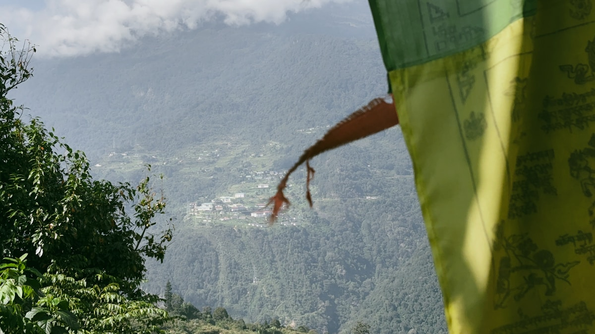
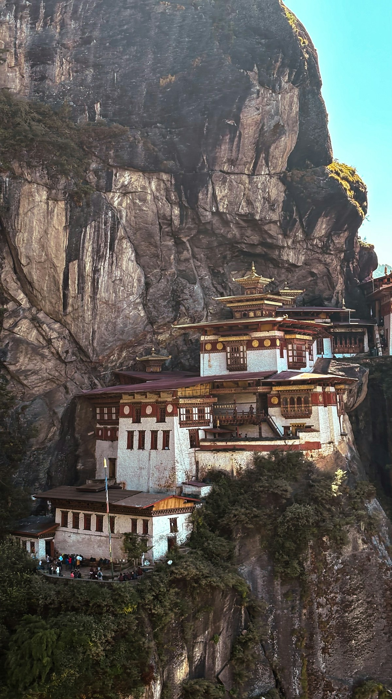

| 事项 | 结论 |
|---|---|
| 事项 | 结论 |
| 签证（最关键） | 中国护照必须通过不丹持牌旅行社代办签证：$40 签证费 + 可持续发展费 SDF $100/人/晚（2027-08-31 前的优惠价），需护照+白底照片+往返机票+行程单，5–7 个工作日出签 |
| 推荐方案 | 8 天：帕罗 2 天（含虎穴寺）→ 廷布 2 天 → 普那卡 2 天 → 帕罗 1 天 → 返程 |
| 返程约束 | 帕罗机场航班少且多为早班（曼谷线约 6–7 点起飞），返程前一晚务必宿帕罗 |
| 行程链 | 帕罗 → 廷布 → 普那卡 → 帕罗 → 返程 |
| 预算（人均） | 经济 18000–26000 ／ 标准 32000–48000 ／ 舒适 70000–100000（人民币） |
| 三件提前事 | ① 找持牌旅行社订全包行程 ② 付清 SDF+签证费拿到清关信 ③ 提前订帕罗往返机票（曼谷转机） |
| 季节提醒 | 3–5 月春花与清新山谷、9–11 月秋高气爽最宜；6–8 月雨季虎穴寺可能因雷雨临时关闭；12–2 月干冷但晴天多 |
| 支付 | 努扎姆 BTN（1 元 ≈ 11.5 努扎姆），印度卢比 1:1 混用；游客大额支出已含在旅行社套餐内 |
以下为 8 天 7 晚的推荐节奏：帕罗进帕罗出，三城由山谷公路串联（全程旅行社配车+向导）。虎穴寺徒步放在适应高海拔后的第二天，之后每天移动 ≤2h。
| 日期 | 行程 | 过夜地 | 主题 |
|---|---|---|---|
| D1 抵帕罗 | 北京✈曼谷✈帕罗（转机约 10–13h），下午帕罗镇+帕罗宗，宿帕罗 | 帕罗 | 抵达+预热 |
| D2 | 虎穴寺全天徒步（往返 4–6h，落差 600–900m），宿帕罗 | 帕罗 | 虎穴寺日 |
| D3 | 上午帕罗国立博物馆，驱车赴廷布（约 2h），下午纪念塔+廷布宗 | 廷布 | 廷布初访 |
| D4 | 廷布：佛都登玛大佛+周末市场+民俗博物馆，宿廷布 | 廷布 | 廷布文化日 |
| D5 | 过多楚拉山口（108 座佛塔）赴普那卡（约 3h），下午普那卡宗 | 普那卡 | 普那卡日 |
| D6 | 普那卡吊桥+奇美寺（求子庙）+卡姆苏姆佛塔徒步，宿普那卡 | 普那卡 | 山谷徒步日 |
| D7 | 驱车返帕罗（约 3h），杜克耶堡废墟+帕罗山谷，宿帕罗 | 帕罗 | 返帕罗日 |
| D8 返程 | 帕罗✈曼谷✈北京（早班机转机），到家 | — | 收尾 |
以下为 8 天全程的逐小时执行时间线，可当作「当天打开照着走」的清单。标注 ※ 的可选项视体力与天气取舍。
| 时间 | 事项 |
|---|---|
| 00:00–07:00 | 北京✈曼谷（直飞约 4.5h）建议前一晚出发，宿曼谷一晚衔接早班机（帕罗线每天仅早班） |
| 06:00–10:30 | 曼谷✈帕罗（不丹航空/皇家航空约 4h25m），穿越喜马拉雅，峡谷降落 |
| 11:00–12:30 | 入境+取行李，旅行社持牌向导接机，入住帕罗酒店（海拔 2200m，先适应） |
| 14:00–17:30 | 帕罗镇（免费）：老街漫步+帕罗宗 Rinpung Dzong（约 80 元），看日落 |
| 18:00 | 晚餐：帕罗镇餐厅（Momo 蒸饺、辣椒奶酪 Ema Datshi） |
| 时间 | 事项 |
|---|---|
| 07:00–08:00 | 早餐后退房出发，驱车到虎穴寺登山口 Ramthangka（2220m） |
| 08:00–11:00 | 徒步上山（约 2–3h）：松林+经幡路，中途补给站 Taktsang Cafeteria 休息 |
| 11:00–13:00 | 虎穴寺 Taktsang（门票约 1000 努扎姆）：参观悬于 900m 绝壁的寺院，内部禁拍 |
| 13:00–15:00 | 午餐（补给站简餐约 7–11 美元）后徒步下山 |
| 15:30–17:30 | 帕罗国立博物馆 Ta Dzong（约 80 元）+ 帕罗山谷观景 |
| 时间 | 事项 |
|---|---|
| 08:30–10:30 | 驱车帕罗→廷布（约 2h，65km 柏油山路，途中可远眺帕罗河） |
| 11:00–12:30 | 廷布国家纪念塔 Memorial Chorten（免费）：转经与佛塔，当地人生活缩影 |
| 12:30–13:30 | 午餐：廷布市场周边（藏式咖喱、Momo） |
| 14:30–17:00 | 扎西确宗 Tashichho Dzong（约 80 元）：首都王宫+政府机关所在地，河畔宗堡 |
| 18:00 | 廷布街头闲逛，宿廷布（海拔 2350m） |
| 时间 | 事项 |
|---|---|
| 09:00–11:00 | 佛都登玛大佛 Buddha Dordenma（免费）：51.5m 巨型坐佛，俯瞰廷布谷 |
| 11:30–13:00 | 廷布周末市场（免费，周五–周日开放）：辣椒、菌菇、不丹手工艺品 |
| 13:00–14:00 | 午餐：市场周边小吃 |
| 14:30–16:30 | 民俗遗产博物馆（约 60 元）：传统农居与生活展，+邮局定制邮票（可选） |
| 17:00 | 回酒店休息，晚上可看传统射箭比赛（当地最热运动） |
| 时间 | 事项 |
|---|---|
| 08:30–10:30 | 驱车廷布→普那卡（约 3h，76km），先到多楚拉山口 Dochula Pass（3100m）看 108 座佛塔与喜马拉雅雪山 |
| 10:30–11:30 | 山口观景台+咖啡，晴天可见珠穆拉里峰 |
| 12:30–13:30 | 普那卡午餐（海拔 1250m，气候温暖） |
| 14:30–17:30 | 普那卡宗 Punakha Dzong（约 80 元）：不丹最美国王宗堡，建在普那卡河交汇处 |
| 18:00 | 宿普那卡，晚餐酒店餐厅 |
| 时间 | 事项 |
|---|---|
| 08:30–10:00 | 普那卡吊桥（免费）：不丹最长的铁索吊桥，稻田与河谷景观 |
| 10:30–12:30 | 奇美寺 Chimi Lhakhang（约 60 元）：疯癫圣僧的「求子庙」，田间徒步 20 分钟抵达 |
| 12:30–13:30 | 午餐：普那卡镇 |
| 14:30–17:00 | 卡姆苏姆佛塔 Khamsum Yulley Namgyal Chorten（免费，徒步往返 2–3h）：河谷上的白塔 |
| 18:00 | 回酒店，晚餐后河畔散步 |
| 时间 | 事项 |
|---|---|
| 09:00–12:00 | 驱车普那卡→帕罗（约 3h），途中看河谷与梯田 |
| 12:30–13:30 | 帕罗午餐 |
| 14:00–16:30 | 杜克耶堡 Drukgyel Dzong（免费）：昔年抗击西藏入侵的古堡废墟+雪山背景 |
| 17:00 | 帕罗镇自由活动：购物（手工纸、唐卡、手织围巾），宿帕罗 |
| 时间 | 事项 |
|---|---|
| 06:00–07:00 | 退房，驱车到帕罗机场（机场离镇 10 分钟） |
| 09:00–10:30 | 帕罗✈曼谷（早班机约 4h25m） |
| 13:00–18:00 | 曼谷转机：机场午餐+免税店 |
| 18:30–次日 | 曼谷✈北京（约 4.5h），落地入境到家 |
必去（必去）/ 顺路（顺路）/ 可跳过（可跳过）。

必去
必去
顺路
顺路
必去
顺路
顺路图片为 Unsplash 主题图（虎穴寺、帕罗宗、扎西确宗、大佛、纪念塔、普那卡宗、多楚拉山口佛塔、奇美寺均为不丹实景），用于页面配图。更多免费体验：廷布射箭场、帕罗山谷骑行、普那卡吊桥。
点击左侧节点可在地图上定位；点击地图 marker 会高亮对应节点。坐标为 WGS-84 转 GCJ-02 纠偏后标注。
以下为单人、不含购物的估算，人民币计价；出发地基准北京。汇率按 1 元 ≈ 11.5 努扎姆。最大头是「政府费」：SDF $100/晚 × 7 晚 + 签证 $40 ≈ 5500 元，所有档位相同。机票按曼谷转机往返 12000–16000 元计。
| 项目 | 经济（18000–26000） | 标准（32000–48000） | 舒适（70000–100000） |
|---|---|---|---|
| 往返机票 | 曼谷转机 12000–15000 | 旺季/灵活 15000–20000 | 商务舱/全程接驳 25000–35000 |
| 签证 + SDF（7 晚） | 约 5500（固定） | 约 5500（固定） | 约 5500（固定） |
| 住宿（7 晚） | 3 星 400–700/晚 | 4 星 900–2000/晚 | 5 星/奢华酒店 4000–10000/晚 |
| 导游+车+餐饮（套餐制） | 跟团套餐 800–1200/天 | 专属车导 1200–2000/天 | 全包+私人向导 3000–6000/天 |
| 门票活动 | 虎穴寺+宗堡 300–600 | 加骑马/射箭体验 800–1500 | 加热气球/深度徒步/SPA 3000–8000 |
砍掉普那卡第二天的卡姆苏姆徒步（D6 改为半日吊桥+奇美寺，下午返帕罗），或廷布 D4 压缩为半天。6 天可压到 22000–35000 元。注意虎穴寺、廷布、普那卡宗三大经典一天都不能少，砍的全是「二线景点」。
每年 4 月帕罗 Tshechu、9–10 月廷布节是不丹最盛大的宗教庆典：面具舞、僧袍列队、万人朝圣。赶上节日的城市多留 1 天，住宿和机票要提前 3–6 个月抢；节庆期间满城经幡，氛围无价。
| 方式 | 时长 | 参考价 | 备注 |
|---|---|---|---|
| 北京→曼谷 | 直飞约 4.5h / 经香港约 7.5h | 往返 2000–4000 元 | 国航/海航/泰航等多家直飞 |
| 曼谷→帕罗 | 约 4h25m | 往返约 10000–14000 元 | Drukair 不丹皇家航空 / 不丹航空，每日早班 |
| 全程转机 | 10–13 小时（含候机） | 往返合计 12000–18000 元 | 帕罗机场地形特殊仅白天起降，建议提前一天抵曼谷 |
| 区域 | 价格/晚 | 优点 | 短板 |
|---|---|---|---|
| 帕罗 | 3 星 400–900 / 4–5 星 2000–8000 | 虎穴寺与帕罗宗步行可达，山谷酒店风景好 | 僧侣节一房难求 |
| 廷布 | 3 星 500–900 / 4 星 1500–3000 | 首都繁华，博物馆市场多 | 海拔 2350m 需注意高反 |
| 普那卡 | 3 星 400–800 / 4 星 1200–2500 | 山谷田园、海拔低气候暖 | 冬夜冷，选带暖气的房 |
| 多楚拉山口一带 | 中高端 1500–4000 | 云海与雪山景观绝佳 | 位置偏，移动绕路 |
| 民宿 Homestay | 200–400（含餐） | 深度体验不丹家庭生活 | 设施简单，需旅行社协调 |